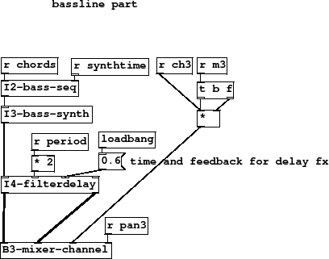
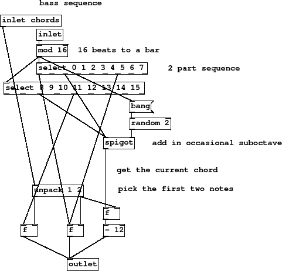
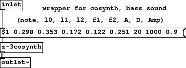
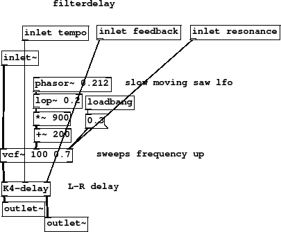
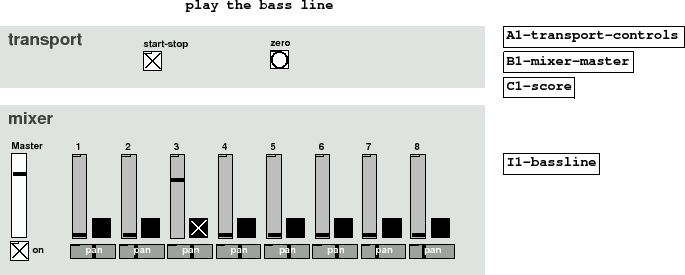

Subsections
Figure 23 summary
- time and feedback for delay fx
Again a top level wrapper for a bassline part. This arrangement
should be familiar by now, you can encapsulate the sequencer, synth,
effects and mixer channel all in the same place. Delay effects
are set to twice the global period with a 60 percent feedback amount.
This instrument will be controlled by fader 3.
Figure 23:
I1-bassline
|

|
I1-bassline.pd
Figure 24 summary
- 16 beats to a bar
- 2 part sequence
- add in occasional suboctave
- get the current chord
- pick the first two notes
In some senses bass is the most important part
of a composition since it roots everything else, but
it doesn't have to be added first. Exactly how you choose
to flesh out a compositional idea is entirely personal
so my reasons for choosing part patterns and order would
not be your choice. Follow along and then rip the patch apart
and do it your way with what you learn.
Each chord in the score consists of 8 notes, the first two are
important because they set the root and primary interval of
the whole harmony. A bassline that alternates between these
two notes is interesting with big chords because it gives
two different interpretations. The three chords chosen are
in tension, we can move between any two of them and the effect
is moving towards concordance, but like steps in an Escher
drawing it never gets there, there is
no cadence so the progression remains forever unresolved.
The bass line, and crucially the first and 13th beat
marks a flip between either of the first two notes. This change
of feel is enough to keep the piece ticking along and producing
interesting new variations. Having occasional suboctave
bass notes gives it a dark and dramatic feel, but the timbre
of the high bass notes is bright and light enough to leave
the total effect ambiguous.
The familiar technique of unpacking some values to float boxes
and using the bang messages from selects is used. Note values 1
and 2 of the chord are unpacked, the second being copied to
another float box for the suboctave. Beats 2 and 10 of the time
sequence are given a probability of 50 percent.
Figure 24:
I2-bass-seq
|

|
I2-bass-seq.pd
Figure 25 summary
In this wrapper you can see we have used an abstraction for a synth called
[z-3cosynth], and a message that holds all the parameters
for a certain sound except the note number, which is substituted in.
For synths that receive all their parameters on each note, note time
initialised, we can use a message as a patch template and
substitute new parameters on the fly by substitution. An alternative is to
have each control with its own independent inlet. There are pros and cons
to both methods in terms of flexibility and the amount of data sent
on each note (and hence stored somewhere when sequencing). Don't worry
about the contents of [z-3cosynth] at this point, it is a
synth with 3 cosines, and all we need to know is that the parameters
in the message give us a nice fat analogue bass sound.
Figure 25:
I3-bass-synth
|

|
I3-bass-synth.pd
Figure 26 summary
- slow moving saw lfo
- sweeps frequency up
- L-R delay
Can you spot the important difference between this and the last effect?
The filter comes after the delay now. Reordering of
effects units makes a big difference to the overall result. This time
I've added a [lop~] to the [phasor~] so that when it
flies back to zero there isn't a very sudden change in cutoff. For this effect
an extra inlet is included to vary filter resonance.
Figure 26:
I4-filterdelay
|

|
I4-filterdelay.pd
Figure 27 summary
Maybe there is a hint of Korg CS or Yamaha MS about this sound, or
the Korg Monopoly with 4 oscillators. Richness comes from
clipping 3 closely detuned cosine generators to highlight
their intermodulation. With filter-delay echoing each note
the result is a more blended and continuous bass backing.
Figure 27:
I5-bassline
|

|
I5-bassline-play.pd
I5-bassline-play.ogg
Andy Farnell
http://obiwannabe.co.uk/